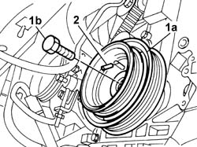
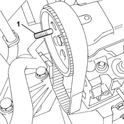
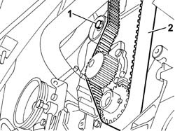
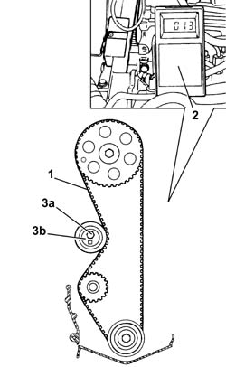
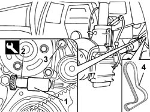
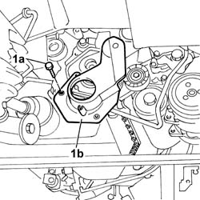

1032B14 TOOTHED TIMING BELT - R + R FOR TIMING ADJUSTMENT OR REPLACEMENT VERSIONS WITH AIR CONDITIONER
- Path
- Procedures > 10 ENGINE UNIT > 1032 TIMING SYSTEM > 1032B BELT TIMING SYSTEM > 1032B14 TOOTHED TIMING BELT - R + R FOR TIMING ADJUSTMENT OR REPLACEMENT VERSIONS WITH AIR CONDITIONER
- Kind
- repair procedure (removal / refitting; the operation number is the code)
- Applies to
- engines: 2.0 16V, 2.8 JTD 8V; all production periods
- Interactive page
- https://sloeber94.github.io/elrnDB-fDct/en/#/244000700
Applies to: engines: 2.0 16V; all production periods
 Removing
Removing
 Refitting
RefittingOp. 7055B54 UNDER-ENGINE GUARD - R R
Op. 1092C11 POWER STEERING PUMP DRIVE BELT - R R FOR VERSIONS WITH AIR CONDITIONER
Op. 1092B40 AIR CONDITIONER COMPRESSOR/ALTERNATOR DRIVE BELT - R + R
See in Op. 1092A12
See in Op. 1032D12
1. Position the crankshaft pulley (1a) and tighten the fixing bolt (1b).
2. Rotate the crankshaft slowly until the correct size pin for the crankshaft timing is inserted.

Applies to: engines: 2.0 16V; all production periods
- Lower the vehicle.
1. Insert a pin with the appropriate diameter for positioning the camshaft in the cylinder head housing.

Applies to: engines: 2.0 16V; all production periods
- Remove the pin from the crankshaft pulley.
Undo the fixing bolt (2a) and remove the pulley (2b).
1. - Undo the bolt retaining the timing belt moving tensioner.
2. Remove the timing belt.

Applies to: engines: 2.0 16V; all production periods
Refitting
Removing1. Fit the timing belt over the pullies.
- Position the crankshaft pulley and tighten the fixing bolt.
- Insert the pin in the crankshaft pulley.
2. Fit the tool C-TRONIC - 105.5 facing downward
- Remove the pin from the camshaft pulley.
- Tension the belt to the recommended value using the special tool.
 | Subject | Value |
|---|---|---|
. | TOOTHED TIMING BELT | unità seem |
- | Timing belt tension | 160 +/- 2 |
 | Description | Code | Function |
|---|---|---|---|
. | Spanner | 1.850.182.000 | Rotate moving timing tensioner |
3. Tighten the fixing bolt (3a) and lock the tensioner (3b).

Applies to: engines: 2.0 16V; all production periods
- Remove the C-TRONIC - 105.5 tool.
- Remove the pin from the crankshaft pulley.
- Rotate the crankshaft through four revolutions without going backwards.
- Rotate the crankshaft in a clockwise direction without going backwards until the pin enters the housing in the crankshaft pulley.
- Check that the timing reference pin enters its seat on the cylinder heat extension through the pulley.
- Insert the tool C-TRONIC - 105.5 facing downwards and check that belt tension is within specified limits.
| Subject | Value |
|---|---|---|
. | TOOTHED TIMING BELT | unità seem |
- | Timing belt tension | 160 +/- 2 |
- Undo the bolt securing the crankshaft pulley and remove it.
See in Op. 1032D12
See in Op. 1092A12
Op. 1092B40 AIR CONDITIONER COMPRESSOR/ALTERNATOR DRIVE BELT - R + R
Op. 1092C11 POWER STEERING PUMP DRIVE BELT - R R FOR VERSIONS WITH AIR CONDITIONER
Applies to: all engines; all production periods
Removing
Refitting- Disconnect the negative battery terminal.
Op. 7055B54 UNDER-ENGINE GUARD - R R
See in Op. 1008B10
See in Op. 1032D12
1. Work on the tensioning piston.
2. Insert the tool.
3. Loosen the bolt retaining the tensioner.
4. Remove the toothed timing belt.
| Description | Code | Function |
|---|---|---|---|
2 | Calibrated shim | 1.860.638.000 | Component for retaining lower timing belt tensioner spring |

Applies to: all engines; all production periods
Refitting
Removing- Fit the toothed timing drive belt on the toothed drive pulley.
1. Fit the additional timing belt protective cover (1b) and secure it using the fixing bolts (1a).

Applies to: all engines; all production periods
- Make sure tha the reference on the driven pulley coincides with the one on the tappet cover.
- Make sure that the dowel on the toothed drive pulley coincides with the reference on the additional timing belt protective cover.
- Complete the fitting of the toothed timing drive belt.
- After having fitted the toothed timing drive belt, check that the references are aligned.
- Remove the tool.
| Description | Code | Function |
|---|---|---|---|
2 | Calibrated shim | 1.860.638.000 | Component for retaining lower timing belt tensioner spring |
- Tighten the belt tensioner fixing bolt to the recommended torque.
 | Value - daNm | Fastening | Component | Ø |
|---|---|---|---|---|
. | 2,5 | Bolt | MOBILE TIMING TENSIONER | - |
See in Op. 1032D12
See in Op. 1008B10
Topics linked from this page (3)
- 1092B40 AIR CONDITIONER COMPRESSOR/ALTERNATOR DRIVE BELT - R + R
- 1092C11 POWER STEERING PUMP DRIVE BELT - R R FOR VERSIONS WITH AIR CONDITIONER
- 7055B54 UNDER-ENGINE GUARD - R R